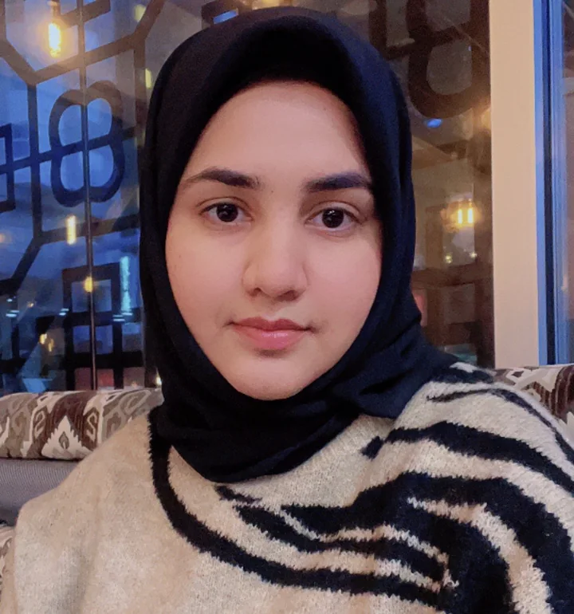
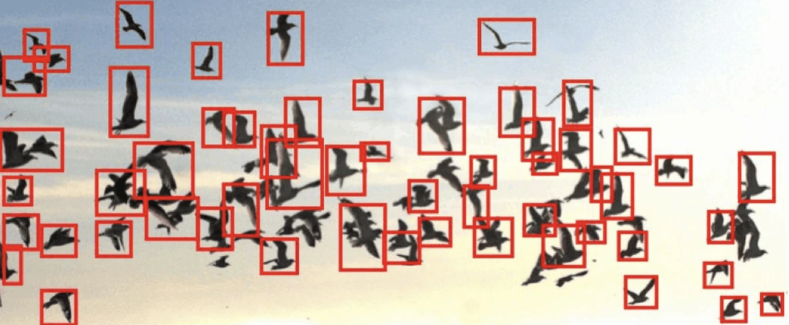
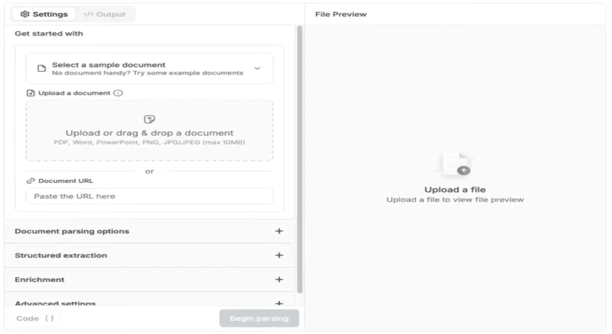
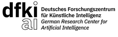
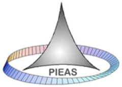
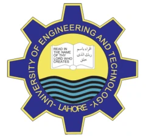

AI Researcher
CeMOS Research and Transfer Center, TH Mannheim
2026 – Present
Mannheim, Germany
- Research in the Intelligent Systems group.
- Current work covers medical image analysis, explainable AI and few-shot segmentation.
AI Researcher at CeMOS, TH Mannheim
Ph.D. candidate at RPTU Kaiserslautern-Landau
Open to research collaborations in medical imaging, explainable AI and LLM report generation.
Get in touchMaster's thesis topic available on evaluating explainable AI methods.
View thesis topicI work on robust, data-efficient visual perception: DETR-based object detection, semi-supervised learning and report generation with LLMs. My current work focuses on medical image analysis, explainable AI and few-shot segmentation. My first-author work has appeared at CVPR, ICCV and ICDAR.
I did my doctoral research at DFKI with Prof. Dr. Didier Stricker, funded by DAAD, leading work on semi-supervised detection, multimodal document layout analysis in the LUMINOUS project and medical anomaly detection in AIRISE. As an Applied AI Scientist at Tensorlake, I built document intelligence systems and led VLM integration.
My long-term goal is agentic AI that can understand, reason and act on visual information.

Few-shot segmentation and detection across chest, polyp, skin imaging and more.
Select a domain to see its papers.
ICCV 2025Featured
CVPR 2024Featured
ICDAR 2025
ICCV Workshop 2025
ICDAR 2024
IJDAR 2024
MIUA 2025
IntelliSys 2025
RAEE & CS 2020
No papers match this search. Try a shorter term or select All.
* Equal contribution
Current research, applied work and thesis topics.
I study how to evaluate explanation methods such as saliency maps, to tell whether an explanation reflects what a model actually relies on.
I explore how LLMs can turn visual findings into clear, structured reports that people can check against the image.
I work on segmenting structures in medical images from only a few annotated examples.

Detectors often struggle when objects cover only a few pixels, are partly hidden, or barely appear in the training data. This work strengthens spatial reasoning in dense scenes, recovers obscured objects from contextual cues, and stabilizes confidence for rare classes, so detection stays consistent in crowded scenes and long-tail distributions.

Complex documents pack many visual components into dense layouts. Beyond text blocks, tables, figures and forms, this pipeline handles citations, handwritten and digital signatures, strikethrough detection and removal, stamps, watermarks and other fine-grained elements that matter in legal, academic and financial documents.
Saliency maps are widely used to explain vision models, but judging their quality is still hard. This thesis develops and tests a metric for evaluating such explanations.
Research and applied AI roles.
CeMOS Research and Transfer Center, TH Mannheim
2026 – Present
Mannheim, Germany
Tensorlake
Jan 2025 – Sep 2025
USA (remote)

German Research Center for Artificial Intelligence (DFKI)
Oct 2021 – Dec 2025
Kaiserslautern, Germany
Degrees in computer science and electrical engineering.
RPTU Kaiserslautern-Landau, Germany
Oct 2021 – Present
Thesis submitted in October 2025. Supervised by Prof. Dr. Didier Stricker. Funded by a DAAD scholarship.

Pakistan Institute of Engineering & Applied Sciences (PIEAS), Islamabad
Jan 2019 – Nov 2020
German grade 1.3. Merit-based PIEAS Fellowship.

University of Engineering and Technology, Lahore
Sep 2014 – Jun 2018
German grade 1.4.
Fellowships, grants and peer review.
Reviewer for these conferences.
PhD scholarship, 2021 – 2026
WiML Workshop at NeurIPS 2024
Merit-based full scholarship for Master's studies
Two nominations, Intermediate Studies, 2014
I welcome questions about my research and collaborations.